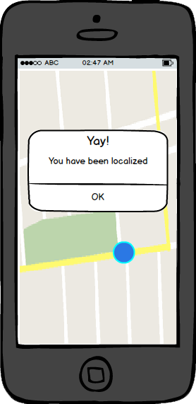
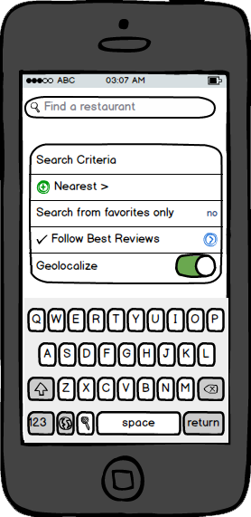
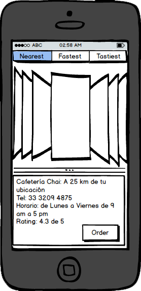
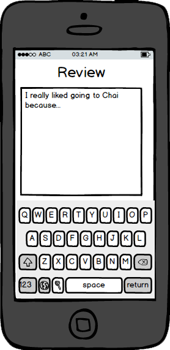

Problem
Nowadays, people who have a busy city life have little time to think concerning what to eat. Many times they end up eating anything, or frequenting the same places over and over, due to lack of other options.
Audience
Our audience consists mainly of young adults from 18-30 years of age, who want to quickly decide on a recommended place, where they are guaranteed service, quality, taste, and/or budget, depending on their particular needs.
Solution
CityMenu is an app which gives recommendations based on user reviews and a analysis of the
most popular restaurants in the city. With an intuitive design, the user is able to easily find what and where to eat in a short period of time.
Impact
We expect our clients will be satisfied with our application, making it their default go-to app when uncertain about food acommodations. The quick decision time will help users spend less time choosing where to eat, and more time to do whatever else they need or want to do.

The app provides geolocalization services, so you can find the food service you want in no time at all!

Our search engine enables you to find the best option based on distance, ratings, times, and other filters, making your decision easy and enjoyable.

If you do not know what to search for, don't worry! The app can provide suggestions based on your location and user ratings, so when you don't have any idea of what to eat, we can give you one!

In some cases, restaurants accept reservations. So if that is the case, you can reserve right from the app. If that is not the case, a phone call is easy to make.

So now you know what to eat, but you need to get there. Luckily, CityMenu takes you there in
no time. Just start the navigation service and follow the instructions to arrive at the restaurant.

Last but not least, when you finish your meal you will get a notification reminding you to rate your experience at the restaurant. That way the community grows bigger and bigger!
 In an interactive and easy way
In an interactive and easy way ...to healthy complete meals
...to healthy complete meals Find nice restaurants...
Find nice restaurants... ... Anywhere in the city
... Anywhere in the city